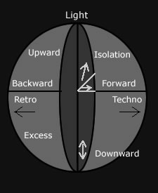

Understanding the Different Subcultures
Andrew Jones - The Boaz Project
Making sense of today's subcultures can be overwhelming. It was certainly a challenge for me when I moved my family to the corner of Haight and Ashbury in San Francisco. So many subcultures, each with its own alternative world of taste, shops, fashions, music, choice of drugs. And then the conflicts of having them relate to each other - the ravers were too happy for the punks and the goths were too serious for the hippies.
But after living among them for a while I began to see patterns emerge which helped to put their cultures in perspective in a way that gave value to their distinctiveness without confining them to a box. I began to see different worlds that each had a gravitational pull. These worlds offered various directions in which young people could move if they wanted to leave the mainstream and journey towards an alternative world.
At first, I saw these directions take place on two axes. The first is in relation to time; the directions are backward in time or forward in time. It is much like how a mechanic will either retard or advance a distributor to synchronize the right timing for a car, or like rewinding or fast-forwarding a video. The second axis is in relation to space; The two directions are downward or upward, either descending or transcending the mainstream dimension like climbing up or down a ladder.
I later found it helpful to add another axis which has to do with personal interaction or integration with society. It also has two directions - toward or away. They moved along the axis towards either extremity or isolation.
The Time Continuum: Backward or Forward?
Backwards and forwards are related to time. Escaping the mainstream existence, also known as Babylon because of its greed, selfishness and conformity rather than creativity and community, can be attempted by going back in time or forward in time.
Backward
Going backward can represent a movement towards a simpler world. It could mean going back a few decades (retro) and adopting the clothes and values of a world that seems to make more sense than the present mainstream world.
Or it could mean slipping back to a more tribal, primitive existence. Adopting neo-romantic ideals of the simple human, the "noble native", a society free from modern concerns of materialism and consumerism, a rural utopia where equality exists between humans and animals and trees. I have referred to such a world as "The Enchanted Forest", it is a world alive with living things, and people that live in it tend to wear natural fibers with natural colors and use natural drugs (marijuana, hash).
There is a return to primitive religion for guidance --- animism, monism, communal living, organic foods and organic building materials, tribal drums, tribal tattoos and piercings. There is an expectation of oneness, a desire for unity and harmony, for peace on earth.
I found it helpful to bring the gospel in its original narrative form rather than a prepositional formula. I re-told the Creation story from Genesis, as it relates to and fulfills much of primal mythology. I present myself not as one who holds to a 2,000 year old religion, but rather as one who traces his heritage back to the very first person who responded to the initiative of God to restore the harmonious relationship that had existed in "dreamtime". The tree of life is central to my storytelling.
The longing for the tree of life is something that touches them deeply and gives interpretation to the primacy of trees in their own religion and lifestyle. I tell them the tree of life was transplanted (Rev. 22) and that it is accessible through the One who hung on the Tree to enable us to have life and life to the full.
I try to avoid the 20th Century preoccupation with individualism in the gospel. It is the family of God that He calls us into, His body, a community that they we live together in forever with their Creator. He came to seek and to save "what" was lost, not "who" was lost.
The redemption of God involves all of creation, a new heaven and a new earth. Those that join this redeemed community have all things in common and look to the one who one day will bring peace and harmony to a new heavens and earth.
Forward
Many people would rather live in the future than in the past or the present, since there are so many exciting possibilities. For them, the future does not come quick enough. They move forward to embrace technological advances.
The fusion of technology with the human (often represented by their body piercings) is a combination they believe will result in a brave new world where many of the problems of the present will not exist. They love motion and speed rather than stillness and reflection. They embrace what technology produces. They wear man-made fibers with colors that are heavily synthesized. Their music is electronic and achieves sounds that only technology could produce. Their drugs are also synthetic made in labs (ecstasy, LSD, Speed) and often have the effect of forward acceleration.
There is great interest in aliens, the Internet and the future. The raver's ideal of P.L.U.R. (peace, love, unity and respect) could well fit many other cultures in this world although the skinhead's philosophies of fascism and social Darwinism are also present. Much of this world has to do with getting the "edge" or advantage over others (smart drugs, smart bars, smart cards, etc). It is these people whose fears are relieved in the knowledge of the hope of God, the Coming One. He knows what the future holds and, as the Psalmist sings, "our times are in His hand."
The Space Continuum: Downward or Upward?
For those that want to exist in a dimension other than the present world of the living that traps them, there are options of escape. They can descend it (downwards) or transcend it (upwards).
Downward
The downward trip is an attempt to live sub-terrain, underground from mainstream. Descending can be achieved through drugs (depressants, heroin, alcohol), through temperament (gothic) or living out a personified deconstruction of everything the mainstream represents (punk, riot grrl, grunge).
- Industrial music creates sounds out of the grinding noises of a society in decay.
- Punk music, in its various forms, gives expression to the anger and frustration.
- Goth music can often find the "marvelous" in the mystery and play on the remains of dead religion. It can also access the soothing silence of death that carries its own beauty for those seeking to descend the ugly realities of a broken world.
Spirituality often revolves around what is secret, mysterious, and unavailable to mere earthlings. Interest in the dark arts of occult is high and whatever has been forbidden or persecuted in the past is valued. Vampirism is admired for its mysterious, spiritual and erotic value. Black tends to be the dominant color and studded leather carries a symbolic rebellion and protection against violence. Piercings in this world are often valued by the experience of the piercing itself (pain, eroticism, and rebellion).
Upward
The upward trip is one of transcendence so the spiritual aspect is a large factor. If the trip downwards is often connected with a desire for power or healing, then the upward journey is often an attempt at higher knowledge, leading to a higher existence. This attempt may be through drugs (psychedelics) or spirituality (mysticism) or a combination of both (techno-shamanism). There is much stress on creation - planets, cycles, seasons, and the appropriate rituals that enable humans to interact.
Historical ritual sites become places of power and the ideal site for a spiral dance or rave or drum circle. There is a longing for a convergence of all things so that universal harmony might establish a higher way of living for all. The clothing is loose and unrestricted and often in the colors of the sky (blues and oranges). Jewelry is often connected to the stars or to various forms of mysticism. Babylonian, Egyptian, Celtic, and Ethiopian in particular.
Paganism is popular as a return to earth based religion. So is Wicca and goddess worship, which can represent the restoration of the female dimension for an overly patriarchal spirituality and thus another balancing mechanism to enable convergence of the forces. Time is cyclical rather than linear.
Things that are timeless are valued over things are bound by time (pop-culture) or progressive in time. Tantric sex, in its present western packaging, has more to do with a continued moment of spiritual ecstasy and is considered "higher" than intercourse that moves progressively towards a climax. They tend to see Jesus as a mystic or shaman.
I present him as the Ascended Master, the Knowledge of God, the One who stands behind all the forces of the universe and will one day cause the great convergence to happen when He brings all things into harmony under his gentle care. I learned a lot from studying Celtic Christianity and found a platform on which I could meet with witches and carry a conversation that wasn't stained by witch burnings and Crusades.
The Celtic believers followed Jesus into a holistic lifestyle that embraced the arts, avoided institutionalism, created life-transforming ritual, and accessed power from God to raise the dead. The next generation respects that. I also gained a lot from studying the redemptive fantasies and fairy tales of George MacDonald and C.S. Lewis who portrayed the "deeper magic" in a way that is palatable to the generation now learning from Harry Potter.
The Relational Distance Continuum: Towards or Away?
The Third Axis is that of Distance. It describes where cultures place themselves in relation to others or to elements in their world. They will usually either move towards something to be close to it and even go beyond it or they will move away from something to avoid it, hide from it.
Towards
This the direction towards extremity, exaggeration, excess. It escapes the mainstream by moving towards its fears and taboos rather than avoiding them. Embracing death through music and art (death metal), experiencing danger through extreme sports (skaters), making excess a fashion statement through distortion and exaggeration.
Hard Core music knows no bounds of volume control or voice projection.
Creating shock value through abnormal body manipulation, forbidden sex practices, non-sensible tattoos and extreme piercings, 1930's suits and yellow top hats.
It is a rebellion against normality and a deconstruction of society's norms. It finds a heritage in the dada and surreal art movements of France and Germany. It makes weird fashionable. When it comes to spirituality, the religions and cults that demand the greatest commitment seem to be the most attractive. The "Straight Edge" movement is often embraced for its commitment to the "no's" of a strict lifestyle.
Christianity is normally perceived as something tame (or lame) and predictable. I am quick to point out the radical nature of following Jesus, which historically has often ended up with the upheaval of "normal" society as well as the death of his followers.
Away
The opposite direction on the distance axis is away from society, a removal, a relocation of ones existence to a point as far away possible from where everyone is. It is a means of escape, an avoidance of life, a refusal to communicate, a shying away from whatever is going on. It is taking a culture to its introverted extreme where the solitude provides a safe place for contemplation.
There are many goths who choose to live in the quietness of the night rather than the day. Increasing numbers of "Cultural Creatives" choose to live off the power grid in remote areas where human contact can be more selective. Cyberspace also offers a respite for geeks who prefer a virtual world where they can avoid the demands of face to face interaction and the norms of fashion and etiquette.
For people occupied with this movement away, spirituality that values meditation, pilgrimage, and disciplines of silence are attractive. Many have recently taken another look at Roman Catholicism and Eastern Orthodox spirituality. Even evangelicals are exploring the idea of labyrinths and monastic orders. The Celtic way, with its history of pilgrimage and "martyrs" that traveled to the mountains and islands to seek God in an isolated place provides encouragement to do the equivalent in the 21st century.
The writings of the Desert Fathers come from a deep place of experiencing the presence of God and are valued highly.
A Colorful, Rotating Ball
Putting the three axes together gives a three dimensional ball on which most subcultures could be placed in relation to their time, space and relational distance. It should be pointed out, however, that there are two factors that add to the complexity of understanding these subcultures.
Motion
No culture is stationary. All are moving and changing and so are the people that make up those cultures. It is common for people to move out of one culture and into another and then into another. From hippie to gutter-punk to cyberpunk, for example.
Integration
Movement across subcultures means there will always be elements of one subculture present in another. A "Velvet Goth" may still have his hemp necklace from his Rainbowithdeadhead past. Tattoos remain despite paradigm shifts. There are some subcultures that tend to stay within their own worlds and others that find acceptance in another cultural environment. A drum circle within a tribal rave on an ancient burial site, for example, might be attractive to alternative people from within very different subcultures.
It may be best to imagine that the ball is constantly rotating and the colors are always blending with each other to create new flavors and remixes, always changing and always reflecting the hopes and fears of the people that have the boldness to wear their anxieties, tattoo their story for the world to read, openly display the color that represents how the deepest part of them feels.
Such people refuse to conform to expectations and are therefore often sidelined as rebellious, out of touch, or just weird. It is no secret that Jesus felt especially drawn to the social outcasts of his day. Among them he found a heightened receptivity to the Story of God. It was these alternative youth that were called out to form the Body of Christ and represent Him to the world. I expect that the emerging church of today will find its most uncompromising leaders from among the alternative subcultures of today.